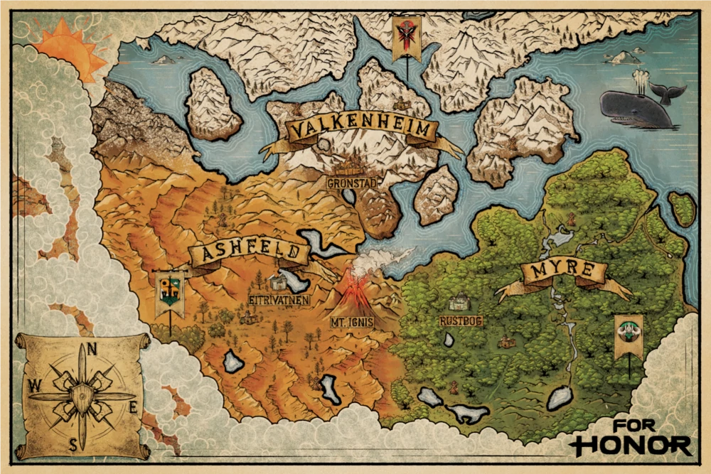
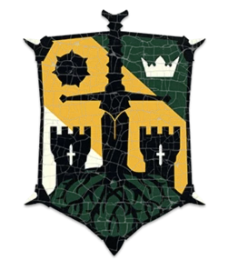
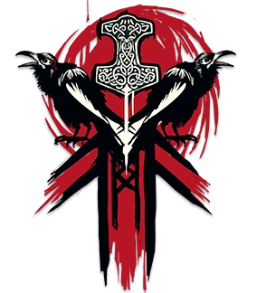
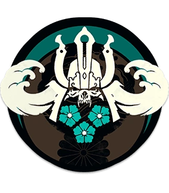
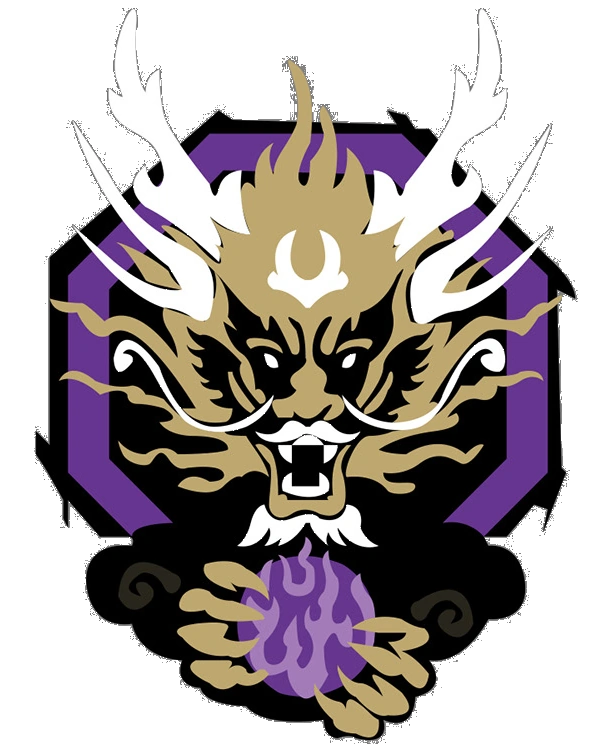
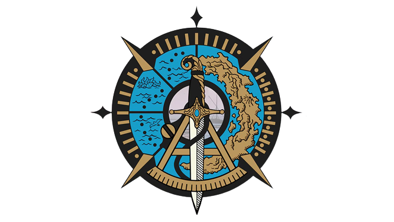

Bienvenue sur ce wiki non-officiel sur le lore de For Honor !
Sur ce site, vous aurez la possibilité de découvrir le lore de tous les personnages et des principales régions du jeu For Honor.
Mais tout d'abord, qu'est-ce que For Honor ?
Comme l'indique la page Wikipédia officielle, For Honor est un jeu vidéo mêlant combat et beat them all, à la troisième personne. Il est développé par Ubisoft Montréal, et est disponible depuis le 14 février 2017.
Il se déroule dans un univers médieval, sur la terre d'Heathmoor, partagée par quatre principales factions : les Chevaliers d'Ashfeld, les Vikings de Valkenheim, les Samouraïs de Myre et les Wu Lin, sans terres.
Après un grand cataclysme provoquant une famine impitoyable, les plus grand guerriers de l'Histoire s'affrontent alors pour la domination d'Heathmoor, et la survie de leur faction.


La Sentinelle
La Spadassin
Le Gladiateur
Le Fléau
Le Victimaire
L'Émissaire
Le Centurion
Le Griffon
La Belliciste
La croyance des Chevaliers est que beaucoup, sinon toutes les ruines antiques ont été construites par leurs ancêtres, le Grand Empire Romain, qui s'est effondré durant le Cataclysme. Les Chevaliers avaient alors été dispersés pendant des siècles mais ont récemment commencé à se réunir sous une seule bannière, celle de la Légion de Fer. Cependant, il y a encore ceux qui choisissent de rassembler leur propre "Légion", et leur alliance avec la Légion de Fer est au mieux fragile.

Le Hersir
La Shaman
Le Berserker
Le Jarl
La Jörmungand
Le Highlander
La Valkyrie
Auparavant pensés disparu, les Vikings sont revenus d'outre-mer - et en grand nombre. Ils sont venus prendre de nouvelles terres, piller, étendre les clans et récupérer leur ancienne patrie dans le Nord.
Les Vikings sont le pouvoir incontesté des rivières et des mers. Dans leur quête pour obtenir l'approbation de leurs dieux à Valhalla, ils vivent pour la bataille et la gloire alors qu'ils recherchent des richesses et de nouvelles terres, détruisant tout sur leur passage pour les obtenir.

Le Kensei
Le Shinobi
L'Orochi
Le Shugoki
L'Hitokiri
L'Aramusha
La Nobushi
Le Kyoshin
Les Samouraïs de l'Empire de l'Aube viennent d'une terre loin à l'est, et ils racontent l'histoire d'une patrie et d'un empereur qui ont été perdus par la mer et le feu lors du grand Cataclysme. Aujourd'hui, plus d'un millénaire plus tard, les guerriers nomades n'errent plus et se sont reconstruits sur une nouvelle terre avec un nouvel empereur. Après avoir été chassés de leurs foyers ancestraux et avoir reconstitué leurs forces, bien que puissantes et rusées, les Samouraïs se retrouvent encore largement en infériorité numérique face à leurs nouveaux voisins.

Le Tiandi
La Nuxia
Le Jiang Jun
Le Shaolin
Le Zhanhu
La faction connue sous le nom de Wu Lin est composée de guerriers de la Chine ancienne, qui voyagent maintenant vers l'ouest pour se venger de la guerre, de la trahison et des tragédies personnelles.

La Pirate
Le Medjaÿ
Contrairement à ceux des quatre autres factions, les héros Étrangers sont des aventuriers libres qui n'ont aucun lien culturel entre eux. Ils se battent pour ceux qui leur sont fidèles ou qui les paient bien.